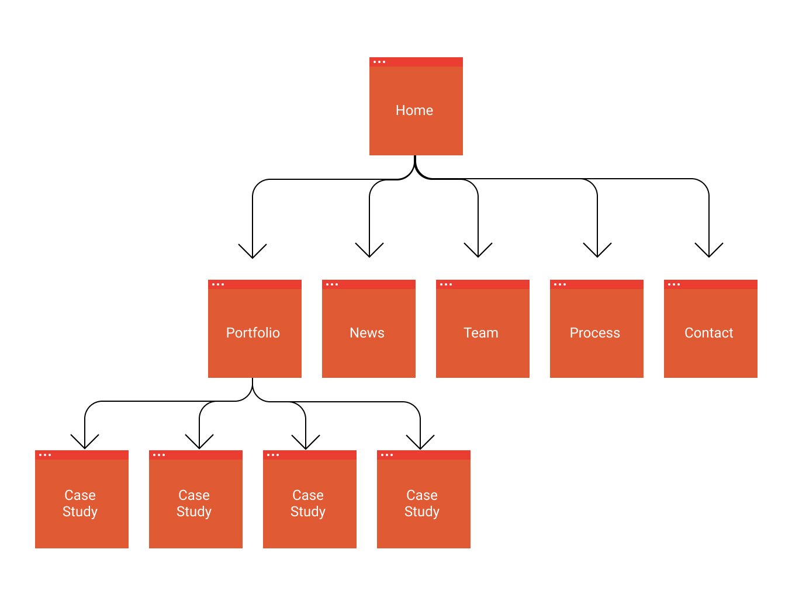
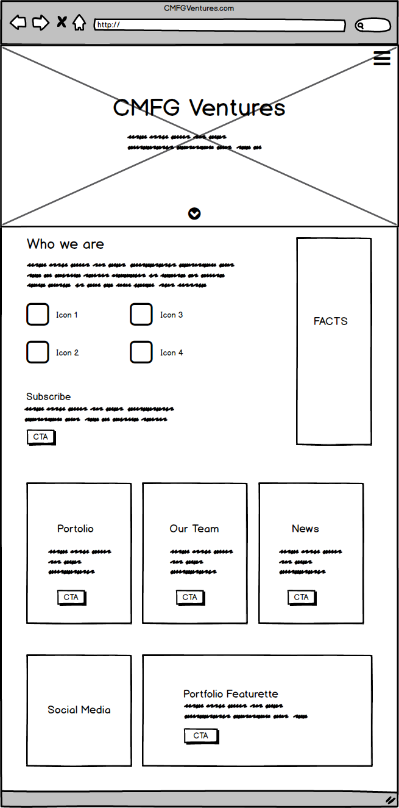
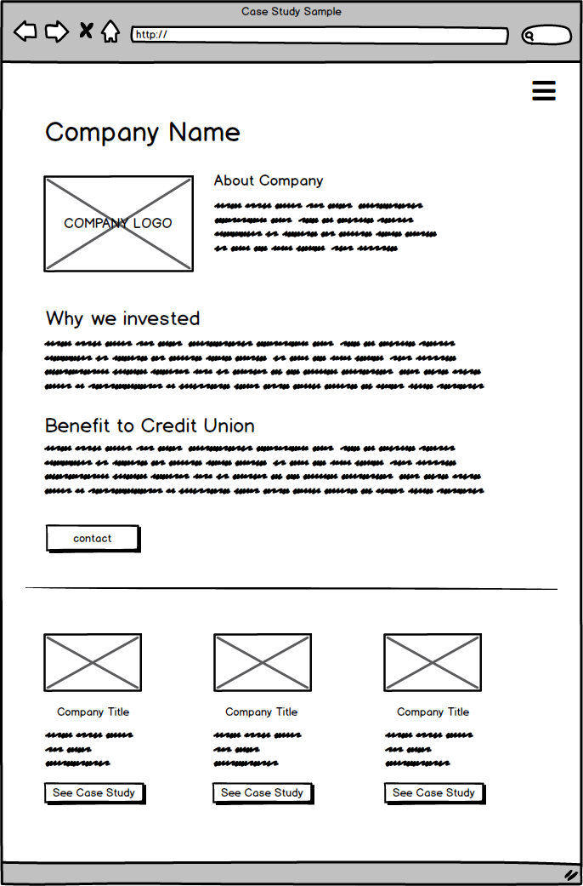

The purpose of this project was to revamp the digital space of the venture capital arm for CUNA Mutual.
Improve the experience and navigation to support long term site improvements.
UX and design support on a two person team.
Wireframe and design 3 of 7 pages, create site flow.
The project was scheduled to be completed in 12 weeks.
In early 2018, an internal business client approached our group to revamp their site. The business needs had outgrown the one page site they were using and wanted to create an experience that better reflected their place as a player in the venture capital space. Our team formulated a plan to meet the design needs by accomplishing the following:
The main user of the site was identified as a startup executive. The marketing team provided us with qualitative information regarding what types of content they heard as most desired from potential investees: a news section and portfolio to better understand whom the firm had invested in and if their company would be a good fit.
Timothy
Role: Start-up Executive
Tim is an executive at a financial technology company seeking seed funding. He browses venture capital sites seeking funding from capital firms familiar with his business sector that have invested in similar companies.
With an identified user persona, we decided to craft a navigation and home page that would allow those users to focus on information gathering and content that they desired most, stories like their own. The intent would be that people from potential companies would come to the table feeling more informed to discuss funding because they had already seen similar scenarios succeed on the site.
Our frame focused on the user. However, we also wanted to ensure that we were addressing business needs, so our secondary focus was to make contacting simple.
We structured the site in a way that kept learning at the forefront. Portfolio would help someone see the companies invested, news would showcase what companies were being invested in and how they were performing, and process would outline the typical steps that would result in funding. The case studies, 2 levels deep in the sitemap, would be geared towards a binging loop.
We structured the home page so that the user could get to know the company and have informational cards with the highest priority content, framed from the perspective of the persona:
Portfolio companies, who the team was, and what the press said.
We structured the content of the case study pages to focus on a story that the user could engage with, and when they were finished, we made the main calls to action either binge more content like this, or contact us to learn more about how to partner.
I worked with our business partners to iterate on small design changes, and then worked with our IT groups to get the site built into their upcoming sprint schedule. Since this would be a Sitecore CMS site, many of the design elements were built to be components for ease of management down the line.
On this project I collaborated with the Senior UX designer to design the pages, IT to get the site built, and Marketing for research and content/direction. What was most rewarding about this project was working with partners who were open to change and new ideas at every stage. Feeding off of the ideas and energy with this group helped this project move efficiently.
Research was done through competitive analysis and anecdotal evidence from the group who are consistently on the front line with the targeted audience. For the site’s next steps, traffic analysis and site surveys would be helpful for us to start better understanding how users are navigating the site and what type of content on the site is getting the most traction.